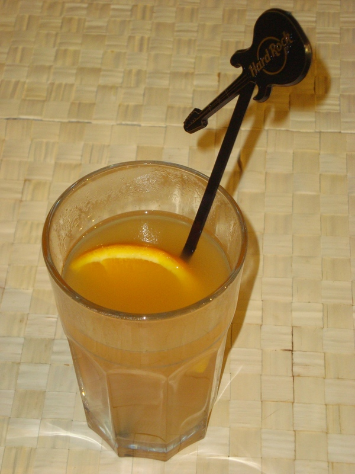

Uplynulý týden se nesl v duchu krásného počasí, leč nejspíš i v jeho důsledku Péťu sklátila choroba. Protože diplomku už mám v podstatě hotovou (rozumějte “už se mi s tím nechce drbat”), vyrazila jsem do Tesca na nákup, abych mohla Péťovi připravit tuhle vitamínovou bombu :-)… Budeme potřebovat:
- litrovou krabici pomerančového džusu
- 1 menší pomeranč
- kousek čerstvého zázvoru
- pytlík čaje
- hřebíček
- med
A teď jak na to: Do většího hrnce dáme vařit asi 200ml vody. Až nám voda začne bublat, vložíme do ní pytlík s čajem a necháme ho chvilku vyluhovat. Mezitím si omyjeme a oloupeme zázvor a nakrájíme ho na tenké plátky. Omyjeme také pomeranč, který rovněž pokrájíme - na kolečka. K čaji v hrnci přidáme asi 800 ml pomerančového džusu a několik hřebíčků a společně zahřejeme k bodu varu. Poté přidáme plátky zázvoru a 4 lžíce medu. Necháme 2-3 minuty prohřát a máme hotovo. Teď už stačí jen nalít do sklenice, přihodit pár plátků pomeranče a nějaké to míchátko :-).

Kdo navštívil Hard Rock Café a nečórnul si jejich stylová míchátka, jako by tam nikdy nebyl :D…
Tento ovocný punč je výbornou variantou pro abstinenty nebo ty, kteří si zkrátka nemohou dát ten “pravý” alkoholový punč. Chuť je skvělá a pokud holdujete zázvoru, tak tento recept určitě vyzkoušejte. Příští zimu nebudu pít nic jinýho :D! Určitě by se dala vyrobit variace i z nějakého jiného ovoce/džusu, ale to už ponechám na vaší fantazii :-).
Komentáře (2)
Komentáře jsou uzavřené.